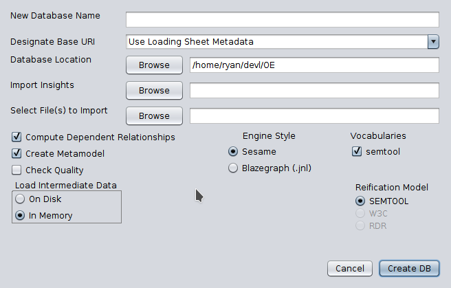

The OS-EM Semantic Toolkit works against a triplestore. If you already have one, great! If not, you will need to create one. The Toolkit can load data in a variety of formats:
If you just want to make your own data “on the fly,” the system supports that, too. You can enter data directly into the tool, or use SPARQL to add it by hand.
If you just want to see what the system can do, check out some sample files.
If you don’t have existing semantic data, the most common use-case for creating it is to use specially-formatted Excel files. (The system works equally well with Excel files or LibreOffice files saved in the Excel format.) Don’t worry, the special formatting is minimal! For the most part, row 1 of a sheet will contain “header” information about the sheet, with cell A1 defining what type of sheet it is. There are three types of sheets, and the first two are completely optional.
The aim of the Excel loader is to use human-readable text in all cases. If you want to use URIs instead, you can do so. Just remember to enclose them in < and >.
The Loader Sheet is optional. If you include it, the sheet must be labeled “Loader.” The header row must contain the cell “Sheet Name” and (optionally) “Type” in that order. Column A will then contain the names of the sheets to load, and Column B will contain the format to expect. Valid formats are “Node,” “Relation,” “Metadata,” or “Usual.” These types are used to error-check the format of the sheets themselves, with “Usual” meaning to ignore the check.
So why use a Loader Sheet? If you have a large spreadsheet, but only want to load some of the sheets, you can specify which ones in the Loader Sheet. Without a Loader Sheet, the Toolkit will attempt to load all sheets. There can only be one Loader Sheet in a data file.
The Metadata Sheet is also optional. It provides a means of defining namespaces used in the Data Sheets, as well as extra triples you want included during the load process. Cell A1 must be “Metadata” for the sheet to be recognized as a Metadata Sheet. Remember, all URIs must be enclosed in < and > to be recognized.
The Metadata Sheet is basically read as a row of triples. With columns B, C, D interpreted as subject, predicate, object, respectively. The one hickup: Column B can also contain a couple keywords used by the loader:
Prefixes defined in the Metadata Sheet will be used to interpret data in the Data Sheets, as appropriate.
Here’s a sample Metadata Sheet that defines a couple prefixes and a Base URI, and includes publisher information to be stored with the dataset:
| A | B | C | D | |
|---|---|---|---|---|
| 1 | Metadata | @base | <http://os-em.com/loading/example/> | |
| 2 | @prefix | :data | <http://os-em.com/loading/example/data#> | |
| 3 | @prefix | dc | <http://purl.org/dc/terms/> | |
| 4 | <http://os-em.com/loading/example/> | dc:creator | ry@os-em.com <Ry Bobko> | |
| 5 | <http://os-em.com/loading/example/> | dc:description | A sample metadata dataset |
There can only be on Metadata Sheet in a data file.
Data sheets are where the rubber meets the road. You can have a data file without a Loader Sheet or a Metadata Sheet, but you can’t have one without any Data Sheets! Data Sheets come in “Node” and “Relation” varieties, but the format is almost identical.
Node Data Sheets are used to define the nodes and their properties in your graph. A1 must contain the text “Node” and nothing else. B1 is used as the name (rdfs:label) of the class of nodes. The rest of the columns in Row 1 are used as the names (rdfs:label) of the properties related to that class of node. Starting with row 2, the data is interpreted as an instance of the class defined in B1. Here’s a sample Node Data Sheet:
| A | B | C | D | |
|---|---|---|---|---|
| 1 | Node | Human Being | First Name | Last Name |
| 2 | Yuri | Yuri | Gagarin |
When loaded, this sheet will produce a class called “Human Being,” and an instance of “Human Being” with a label of “Yuri.” This instance will also have a first and last name of “Yuri” and “Gagarin,” respectively.
A couple of things to note:
Relation Data Sheets are used to create edges between nodes in your graph. The format is extremely similar to Node Data Sheets, but there are some differences:
Here’s a sample:
| A | B | C | D | |
|---|---|---|---|---|
| 1 | Relation | Human Being | Car | Price |
| 2 | Purchased | Yuri | Yugo | 5000 USD |
This sheet will produce the relation showing that Yuri bought a Yugo for 5000 USD.
All of the “things to note” for a Node Data Sheet apply to Relation Data Sheets as well. In addition:
Remember: Columns B and C in a Relation Data Sheet refer to Column B of a Node Data Sheet.
Now that you have a properly formatted data file, simply start up the OS-EM Semantic Toolkit and use File->New->Database to open the database loader dialog, as show below.

Your data file goes in the “File(s) to Import” field. It can contain multiple files in any of the supported formats. The other fields are optional, and the defaults work for the vast majority of cases. Good luck!